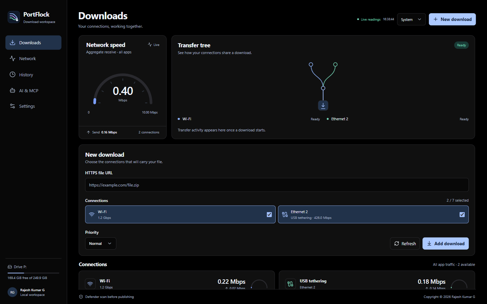

More paths.
One download.
Your Wi-Fi, Ethernet and tethering connections.
Working together in one Windows download workspace.
A clear view.
Of every connection.
Follow real traffic, assign connections to files, and keep your queue moving.

Choose the route.
Send one file over Wi-Fi and USB, and another over Ethernet. Change eligible range transfers as connections change.
Give a file the floor.
Turbo reserves available connections for one file and holds other app transfers. Server range support still determines how many paths can carry it.
From link
to local file.
Add a direct HTTPS link.
Choose your save location and the connections this file should use.
Watch the work happen.
See aggregate traffic, individual adapter speed, file progress and storage. Pause supported range transfers when you need to.
Save after security checks.
PortFlock checks transfer integrity and asks Microsoft Defender to scan the staged file before publishing it.
Combining links is not guaranteed to add their advertised speeds. The server, mobile plan, network routes and disk all matter. Multiple links need compatible byte ranges and a stable file identifier.
Your browser.
A new way in.
Let supported public HTTPS downloads move into PortFlock automatically, with your approval.
How to install Browser LinkOpt in. No cookies copied.
No webpage access. No listening HTTP port.
Let your AI handle the link.
The local MCP server lets a compatible AI client choose adapters, download into a folder you allow, and read the verified result. No AI service is built into the extension.
Set up the MCP connectionPut your connections
to work.
PortFlock for Windows. Download the setup bundle, verify it, and install for your user.
Windows setup bundleRelease information is loading.
License terms are being finalized. No open-source license has been granted. Read the current terms.
Verify your download.
Compare the bundle's SHA-256 with the published value before running setup.
Loading published checksum…This preview is not code-signed. Windows may show a publisher warning. Do not disable Windows security; stop if you cannot verify the release.
A few things to know.
Install the app and optional browser extension
Use Windows 11 x64 with Microsoft Edge WebView2, Microsoft Defender Antivirus and PowerShell 7. Download and extract the complete setup ZIP, then open PowerShell 7 in that folder and run:
.\Install-NetBooster.ps1The installer checks payload hashes and installs for your Windows user. Follow your Windows execution policy. It offers optional browser setup; you approve loading the extension in the browser. You can open the guide later from Settings → Browser extension.
For Edge or Chrome, open the browser's Extensions page, enable Developer mode, choose Load unpacked, and select the folder shown by the setup guide. Open the extension, check the app connection, and explicitly turn handoff on. Store publication and Firefox signing are still pending.
To update, close the app and run the newer installer. There is no need to uninstall first. To remove the app, use Windows Installed apps. Remove the extension from each browser separately.
Connect an AI client using MCP
Use an existing local output folder. The installed app bundles its local MCP server. In PortFlock, open AI & MCP, prepare the server, enter the output folder and copy the displayed host configuration into your compatible MCP client.
The server exposes list_connections, start_download and download_status over local stdio. It allows public HTTPS URLs, limits concurrent work and prevents overwriting existing destination files. Grant access only to a folder you intend the AI to use. AI software providers have their own privacy terms.
What happens if the connection fails or I close the app?
Compatible range downloads retain completed, verified chunks. Choose Save progress and close, then resume from saved progress when you return. A changed ETag, changed file size or unsupported server can prevent recovery. Single-stream downloads may need to start again.
Security and responsible reporting
The app validates HTTPS certificates, bounds transfer work, preserves existing destination files until publication, applies Windows Mark of the Web and asks Defender to scan the staged file. Browser and MCP requests additionally require public endpoints and cannot disable these checks. No downloaded file is executed automatically.
These protections reduce risk; they do not guarantee that every file is harmless or that software has no vulnerabilities. Respect Windows warnings and keep Windows, Defender and your browser current.
For security concerns, use the GitHub security page if private reporting is available. Otherwise, open an issue requesting a private reporting channel without disclosing exploit details, private URLs, credentials or logs.
The details, in plain sight.
Effective 3 November 2026. Published by Rajesh Kumar G. Contact through GitHub Issues.
Privacy notice
This website
This is a static GitHub Pages website. Rajesh Kumar G has not added analytics, advertising, tracking pixels, account registration, cookies or browser storage. The demonstration runs in your browser and does not inspect real network adapters. Fonts and images are hosted with the site. Fetching release metadata stays on this site.
GitHub hosts the page and release files and may process technical request data, including IP address and device information, under the GitHub General Privacy Statement. Clicking external links sends you to those services. GitHub Issues submissions are public unless GitHub explicitly offers a private channel.
The Windows app and Browser Link
The app keeps connection history, diagnostics and recovery data on your device. Recovery and pending browser requests can contain the full download URL, target path and file metadata. Diagnostic logs use bounded rotation and avoid recording raw URLs. Browser Link stores its enable setting, recent status and temporary handoff identifiers locally. It sends a supported download URL and filename hint to the allowlisted local app through native messaging. It does not copy cookies, browsing-page content, session headers or private-session downloads.
The download server receives requests and the public IP addresses of the connections used. No application analytics or cloud account is required. Microsoft Defender, Windows, GitHub and any MCP client follow their own policies. URL secrets should be treated as sensitive even when stored locally.
Your controls
Disable or remove Browser Link in your browser, choose which adapters the app uses, remove completed history or local diagnostic files, and cancel pending transfers. Uninstall the app before manually removing its local data under %LOCALAPPDATA%\Net Booster. Deleting recovery data prevents resuming those transfers. Contact the owner on GitHub with data-related questions and do not post private data publicly.
Website and preview terms
This site describes PortFlock, a Windows download tool by Rajesh Kumar G. Use the website and any preview builds lawfully and only download files you are authorized to obtain. You are responsible for your data plan charges, network permission, storage and backups.
Performance, combined throughput, availability, recovery and malware detection depend on your system, networks and download server. Preview software can contain errors. The app does not replace Windows security or independent verification of downloaded files. No promise of uninterrupted service or complete protection is made.
The project owner's software license decision is still pending. Publication of a download or source repository does not place the work in the public domain or grant an open-source license. Copyright and third-party notices remain applicable. This page does not assign jurisdiction or add a jurisdiction-specific liability waiver. Statutory rights that cannot lawfully be excluded remain unaffected.
These terms may be updated with an effective date when distribution terms are finalized. Report broken links or inaccurate statements through GitHub Issues.
Copyright and third-party notices
Copyright © 2026 Rajesh Kumar G. PortFlock code and branding authored for this project remain subject to the owner's rights. This website's self-hosted Bricolage Grotesque and Manrope fonts are distributed under their SIL Open Font Licenses.
The app uses React, Radix UI, Motion, Lucide, CPython, pywebview, psutil and the PyInstaller bootloader, plus a React Bits adaptation. Their separate notices and license terms remain in effect; a permissive dependency does not define PortFlock's own license. See NOTICE.md and the complete third-party notices included in the setup bundle. Windows, Microsoft Defender, Edge, Chrome, Firefox and GitHub are trademarks of their respective owners; no sponsorship is claimed.